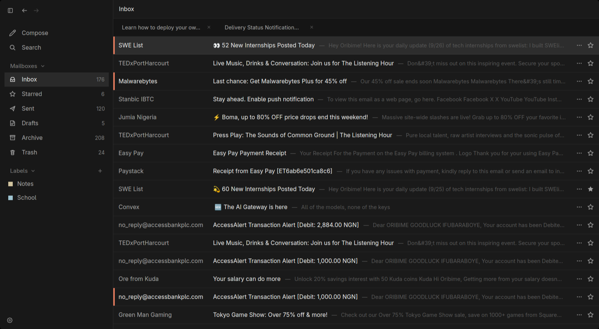
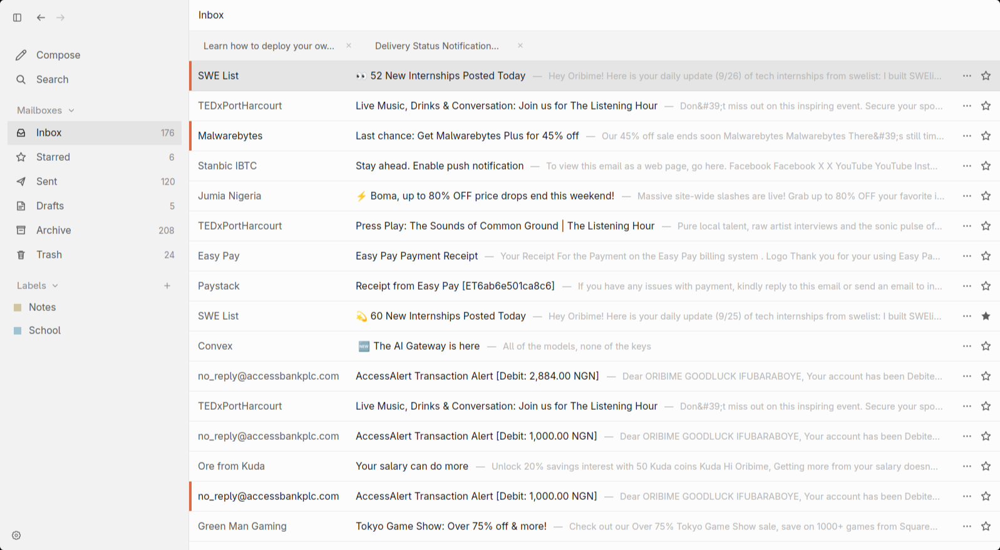

Nori is an email client written in Rust on GPUI. Threads, labels, search and a keyboard first reader, running on your machine and nowhere else.


Why native
The engine behind Zed. Every row is rendered directly by the GPU, keeping the DOM completely out of the reading path.
Pure email primitives: sender, thread, labels, and body. Gmail’s raw API quirks are isolated inside a single adapter layer.
Syncs only what changed since last time, not your entire inbox. One full refresh sets everything right if needed.
⌘1–⌘6 to change views, and Esc to exit. Full client control without touching the mouse.
Tokens stay in your OS keychain, and the cache lives in a local directory you can clear anytime. No accounts, no metrics.
A native Rust/GPUI client and a React port engineered to match pixel for pixel. A change to one lands in the other.
Download
No build is published yet
Nori is a prototype. Clone the repo and run
cargo run -p nori-desktop — the toolchain is
pinned in rust-toolchain.toml.